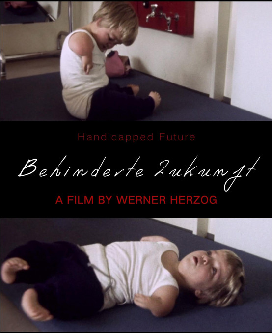

Handicapped Future

Werner Herzog
1971
43 minutes
Wikipedia link
IMDB link
This is text.
Time to choose something different:
- Too bad those kids aren't in some soap opera universe, where even decapitations can be overcome and brain transplants can be performed in restaurants! - Turn to section 241
- This is some bleak-ass Herzog. I need something different. Play me some Dylan instead. - Turn to section 25
- Actually I'm not done being depressed. Show me how bad nuns used to have it! - Turn to section 176